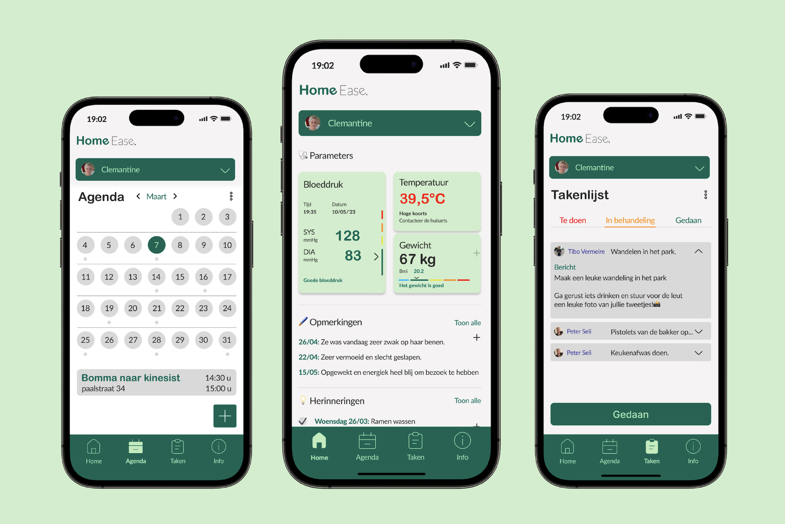
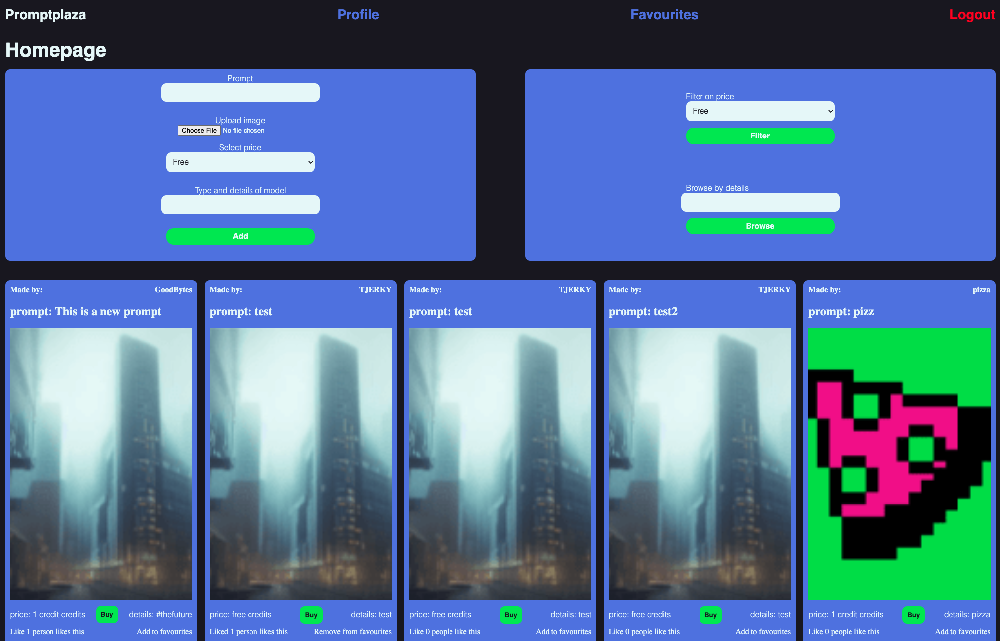
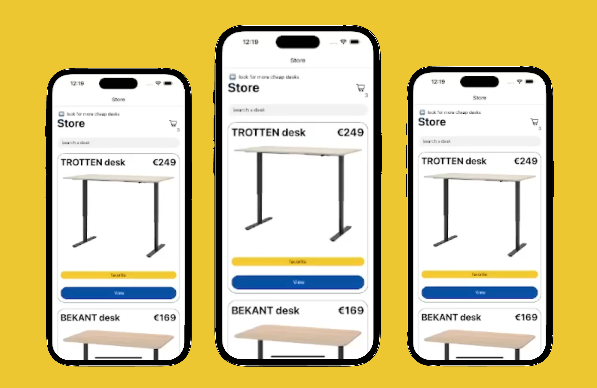

Hi there 👋
My name is Tjerk,
I'm a full-stack developer

I am a year old developer with a passion for taking on new challenges. I really like the logic thinking and to solve problems in team or alone. I'm currently enhancing my skills in javascript frameworks and libraries like Three and Node. I enjoy both frontend and backend development. I am motivated to learn and grow in the world of software development, and I am always looking for new opportunities to expand my knowledge and expertise.
Developer
I like coding and bringing things to live
Languages
HTML, CSS, JavaScript, PHP, SQL
Dev Tools
GitHub, Node, Three, React, Veujs, MongoDB
Recent projects
HomeEase
For Lab2 I cocreated this platform, aiming to simplify the homecare experience. I took the reins of development because it’s my passion and the other person was more a designer. Using HTML, CSS, and JavaScript for the front-end and PHP for the back-end, I crafted a user-friendly space where families could effortlessly monitor their loved ones.
PromptPlaza
PromptPlaza was a group project for Development 4, where I served as the back-end lead for our ambitious group project. In this endeavor, we crafted a platform enabling users to share and sell prompts for generating specific images. Embracing an agile approach, we tackled this task feature by feature, adapting to the evolving demands of the project. Although faced with challenges, including a team member's departure, we persevered. While the front-end might not be flawless, PromptPlaza underscores my determination and proficiency in PHP and GitHub. It showcases my commitment to delivering functional solutions despite obstacles.
ReactNative
During Development 3, I tackled a challenging project that involved creating a WordPress website and integrating it with an API. Despite the time constraints, I delved into React Native, showcasing my foundational skills in this technology. It was also the first time working with GitHub, where I navigated the learning curve, evident in my early commits. While it might not be my proudest work, it reflects my determination to learn and adapt.